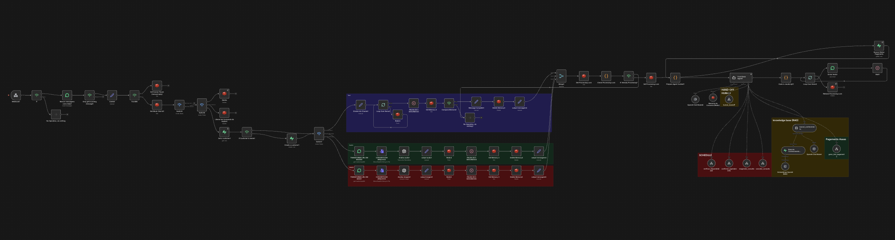
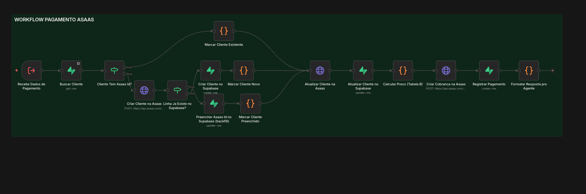
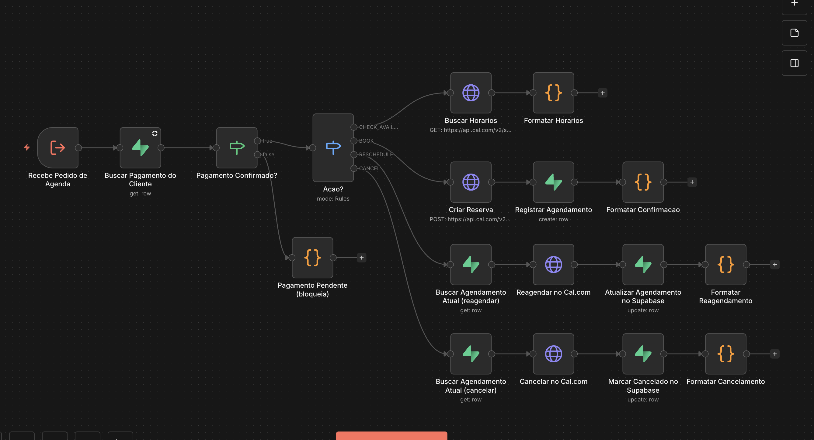
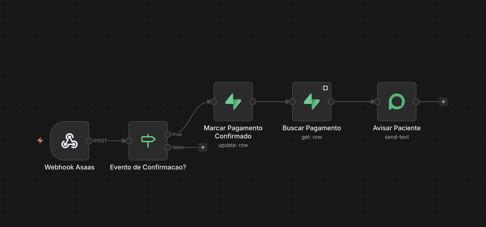
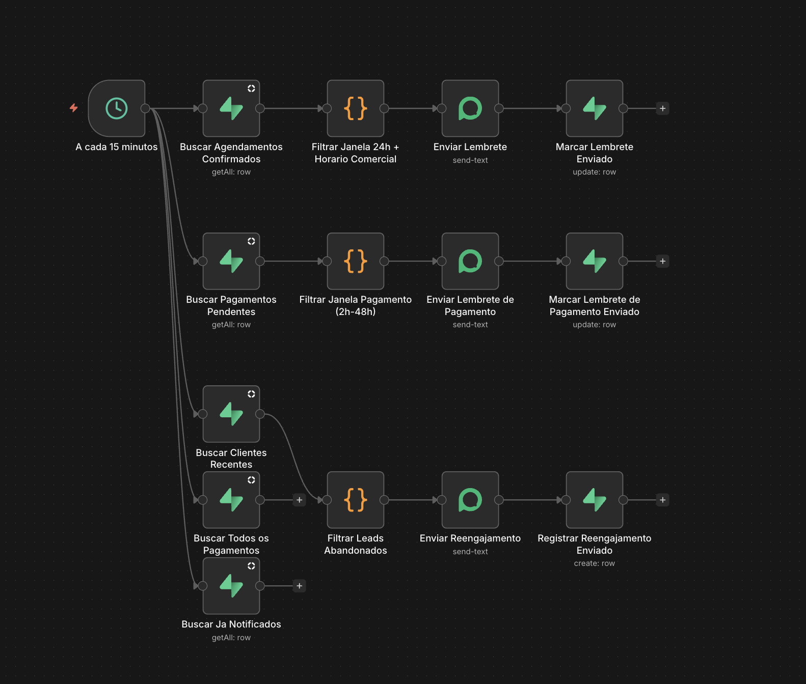

Technical Guide: Architecture, Workflows, Decisions and Known Issues
The agent is split into five n8n workflows, each with one job. They call each other as tools
(toolWorkflow / Execute Workflow nodes) or through Supabase tables that act as the
shared source of truth between them:
WhatsApp (Evolution API, instance "SDR")
│
▼
┌─────────────────────────────┐
│ 1. CLÁUDIA (conversational) │──tool──▶ 2. PAGAMENTO (Asaas)
│ receives every message, │──tool──▶ 3. AGENDAMENTO (Cal.com)
│ holds the LLM agent │──tool──▶ human_handoff (pre-existing)
└─────────────────────────────┘
▲ 4. WEBHOOK ASAAS
│ (listens for real payment
│ proactive WhatsApp message confirmation, updates DB,
└─────────────────────────────────── messages the patient)
5. FOLLOW-UP (cron, every 15 min)
reads the same Supabase tables independently and sends
reminders — it does not go through the agent at all.
The previous system's worst problem was a deterministic router (Decision Router1) sitting
before the LLM agent that could send a real payment or booking message straight to the patient based
on stale database state, completely bypassing the AI. That entire class of risk does not exist in this
architecture: only the agent decides when to call a tool, and every tool re-validates its own preconditions
(payment confirmed, valid slot, etc.) before doing anything real.
Every rule that the business actually needs to hold (correct price, no double payment link, no booking before payment) is enforced in code, not only in the LLM's instructions. The prompt guides tone and judgment calls; the workflow logic guards anything with a real-world consequence. This was a hard-won lesson from three separate incidents during today's build (see §10).
n8n workflow: Dr. Weidson Lira. (agente 1) — 77 nodes, active.
Receives every inbound WhatsApp message via an Evolution API webhook, debounces multi-bubble messages, handles audio (Whisper transcription) and images, checks a "human paused this chat" flag, loads/creates the patient's record, then hands the assembled context to a single GPT agent ("Cláudia") that carries the entire conversation: greeting, qualification, FAQ, objection handling, payment collection, and scheduling.

MESSAGES_UPSERT) →
allowlist check (only specific test numbers can reach the agent right now) →
mark read → filter to real inbound messages →
extract name/phone/type/text (Coleta1)fromMe == true? → a staff member replied manually
from the connected number → set a Redis pause key (currently 60s TTL for testing; should be reset to 1800s
[30 min] before real launch, see §12) and stop.customers table (the clinic's
existing table, shared with the legacy bots) → route by message type
(text/audio/image) → debounce buffer (Redis, ~5s window, joins fast multi-bubble
texts into one) → concurrency lock (prevents double-processing the same
conversation) → live payment status lookup (see §2.4) →
build agent context → agent runs →
format reply (strips em-dashes/stage tags, splits on a blank line into up to 2 WhatsApp bubbles — used only
for the opening message) → send via Evolution, one bubble at a time with a pause
between them → release the concurrency lock.| Tool | Calls | Purpose |
|---|---|---|
buscar_conhecimento | Supabase vector store (pgvector) | RAG lookup for FAQ (clinic facts, DWL Method, addresses, cancellation policy). |
gerar_link_pagamento | Workflow 2 (Payment) | Creates the real Asaas deposit charge and returns the checkout link. |
verificar_disponibilidade | Workflow 3 (Scheduling) | Real Cal.com availability for one day. |
confirmar_agendamento | Workflow 3 (Scheduling) | Creates the real Cal.com booking. |
reagendar_consulta | Workflow 3 (Scheduling) | Moves an existing booking to a new slot. |
cancelar_consulta | Workflow 3 (Scheduling) | Cancels an existing booking. |
human_handoff | Pre-existing workflow Revisão Humana [FIXED] |
Pauses the bot, notifies staff on WhatsApp with a summary. Used for real escalations and as the fallback whenever another tool errors. |
Every tool that needs data the agent has gathered from conversation uses $fromAI(field, description,
type) with an explicit description — the old system's biggest integration bug was a Cal.com field
wired as $fromAI('parameters0_Value', '', 'string') with no description at all, so the model had
no idea what to put there. Every field that is known deterministically (the patient's phone number)
is passed as a fixed expression instead of asking the model for it, removing one whole class of possible
hallucination.
This is the most important reliability fix made today. Initially, the agent was told (only in the prompt)
to "always call the tool fresh, never trust memory." It didn't work: once the model saw one
ainda_nao_confirmado result in the conversation, it started answering "payment not confirmed yet"
from memory on later turns, without calling anything. Prompt instructions could not reliably override this
pattern-matching behavior.
The fix moved the check out of the LLM's judgment entirely. A Supabase node (Buscar Status
Pagamento) now runs on every single turn, looks up the latest payment status for that phone
number, and injects it directly into the agent's input as a labelled fact:
LIVE payment status (ground truth, always check this, never trust an older message in this
conversation over this value): {{ $json.payment_status }}
(NONE = no payment record yet, PENDING = link generated but not paid, CONFIRMED = paid, safe to schedule)
The model no longer decides whether to check — the current truth is simply part of what it reads every time. The four scheduling tools still re-validate this server-side as a second safety net.
The 300+ line system prompt (English instructions, Portuguese patient-facing text) is organized as:
The same table lives in two places on purpose: in the prompt (so the agent can state the price in conversation) and in Workflow 2's code (so the charge is always computed the same way, independent of what the model says). Both were built from the same confirmed numbers, "Table B":
| City | Specialty | First consultation | Return | Deposit |
|---|---|---|---|---|
| Recife | Nutrologist | R$ 550 | R$ 500 | 50% |
| Barreiros | Nutrologist | R$ 500 | R$ 400 | 20% |
| Palmares | Nutrologist | R$ 400 (single value, no first/return split) | 50% | |
| Barreiros | General Practitioner | R$ 300 (single value) | 20% | |
First vs. return is derived automatically: if a Supabase customers row already
existed for that phone before this payment request, it's a return; otherwise it's a first consultation. This
is a simplification (a customer row can exist without a completed past consultation) but is safe by design —
it can only ever make the price equal or lower than a brand-new patient's, never higher.
n8n workflow: Pagamento (Asaas) - Dr. Weidson Lira — 17 nodes, active.
Uses the production Asaas API (real charges).

Called via Execute Workflow Trigger with: customer_name, cpf_cnpj,
email, billing_type (PIX or CREDIT_CARD),
consulting_city, specialty, phone.
The workflow must guarantee every customer has a valid Asaas customer ID before charging them. It handles
three distinct situations, each converging on the same next step (Atualizar Cliente na Asaas):
| Case | Detected by | Action |
|---|---|---|
| New customer | No Supabase row for this phone | Create Asaas customer → create Supabase row with the new ID |
| Existing, has Asaas ID | Supabase row exists with asaas_customer_id filled |
Use the existing ID directly |
| Existing, missing Asaas ID | Row exists but asaas_customer_id is empty (this
happens because the conversational workflow creates a bare customer record on first contact, before any
payment intent, and never itself talks to Asaas) |
Backfill: create the Asaas customer now, then UPDATE (not insert) the
existing Supabase row with the new ID |
After resolution, the customer's Asaas record is always refreshed (PUT /v3/customers/{id})
with the latest name/email/CPF/phone, then the deposit charge is created
(POST /v3/payments) and logged in weidson_pagamentos for tracking.
n8n workflow: Agendamento (Cal.com) - Dr. Weidson Lira [TESTE conta pessoal
Igor] — 18 nodes, active.
907575, "15 Min Meeting"), used only to prove the mechanism end to
end. Before real use it must be repointed to the clinic's own Cal.com account and event types — see §12.
CHECK_AVAILABILITY (top), BOOK, RESCHEDULE and CANCEL
(bottom), each calling the Cal.com API and then writing the result back to Supabase.The very first thing this workflow does, before looking at what action was requested, is look up the
latest payment for that phone number in weidson_pagamentos and check
status == 'CONFIRMED'. If not, every action returns ainda_nao_confirmado and stops —
scheduling, rescheduling and cancelling are all impossible until a real payment has landed.
| action | Cal.com call | Notes |
|---|---|---|
CHECK_AVAILABILITY | GET /v2/slots |
One day at a time; grouped into manhã/tarde/noite, capped at 3 per period, in the code node
Formatar Horarios. |
BOOK | POST /v2/bookings |
Only for one exact slot the patient picked; logs the booking (with its Cal.com uid) to
weidson_agendamentos. |
RESCHEDULE | POST /v2/bookings/{uid}/reschedule |
Looks up the existing booking's uid by phone first. |
CANCEL | POST /v2/bookings/{uid}/cancel |
Marks the local row CANCELLED after the Cal.com call succeeds. |
Verification note: BOOK and CHECK_AVAILABILITY were exercised end to end
in a real WhatsApp conversation today. RESCHEDULE and CANCEL were built to the same
pattern and code-reviewed, but not yet exercised live — treat them as implemented-but-unverified until tested.
n8n workflow: Webhook Asaas - Pagamento Confirmado (Dr. Weidson) — 5 nodes,
active. Endpoint: /webhook/weidson-asaas-webhook.
A second, independent Asaas webhook subscription was registered for this endpoint (the existing legacy
subscription pointing at the old bot's endpoint was left untouched). It listens for
PAYMENT_CONFIRMED / PAYMENT_RECEIVED events, marks the matching row in
weidson_pagamentos as CONFIRMED, and — outside of any conversation turn — proactively
sends the patient a WhatsApp message announcing the confirmation and asking for their preferred day/period.
This is what makes §2.4's "live payment status" actually change without the patient having to say anything.

PAYMENT_CONFIRMED/PAYMENT_RECEIVED events through (anything else, the "false"
branch, is silently ignored). Marcar Pagamento Confirmado updates the row, Buscar
Pagamento re-reads it for the patient's phone number, and Avisar Paciente sends the
proactive WhatsApp message.asaas-access-token header (a secret returned when the subscription was created). The receiver does
not currently verify this signature. Low risk today (the endpoint isn't guessable), but should be added
before this handles real patient payments at volume.n8n workflow: Follow-up 24h - Dr. Weidson Lira — 15 nodes, active
(runs every 15 minutes).
Unlike the other four workflows, this one never talks to the LLM agent — it is a deterministic scheduled job that reads the same Supabase tables and messages patients directly. All three branches share one rule: nothing is ever sent outside 9:00–19:00 (America/Sao_Paulo), even if the underlying condition became true earlier. A candidate just waits for the next poll inside business hours.

| Branch | Condition | Message | Dedup column |
|---|---|---|---|
| Appointment reminder | weidson_agendamentos.status = CONFIRMED, 0–24h before
start_time | Reminds the patient of tomorrow's appointment, mentions the 24h cancellation policy | reminder_sent |
| Payment pending | weidson_pagamentos.status = PENDING, 2–48h since the link was
created | Resends the payment link, offers to help | payment_reminder_sent |
| Lead abandoned | A customers row created 2–48h ago, with no row
in weidson_pagamentos for that phone and not already notified | Re-engages, asks if they still want to book | presence in weidson_lead_followups |
customers table is shared with every legacy bot this clinic has run for months, so it holds real,
already-treated patients. Querying it broadly for "no payment on file" would have wrongly re-engaged old
patients who paid through the old system (never recorded in this new weidson_pagamentos
table). The branch is therefore hard-limited to customer rows created in the last 48 hours — recent enough
that they can only be leads from this new system.All new tables live in Igor's own Supabase project (okolawlvmfyxzvnnpvtv), prefixed
weidson_, fully isolated from his other projects. The pre-existing customers table
(columns used: name, phone, email, cpf_cnpf — note the
legacy typo, not cpf_cnpj — asaas_customer_id, created_at) lives in the
clinic's own separate Supabase project and was only ever read from / carefully updated, never restructured.
id, titulo, conteudo, perguntas, embedding vector(1536), criado_em + function match_weidson_conhecimento(query_embedding, match_count, match_threshold=0.35)
Populated with 10 factual chunks (DWL Method, three addresses, cancellation policy, hormone/implant positioning, exam turnaround, cities/specialties, doctor bio, social contact). Each chunk's embedding text includes a "Perguntas relacionadas" field with the phrasings a real patient would use — the retrieval-accuracy pattern validated on an earlier project (SouClinic).
id, phone, asaas_payment_id, invoice_url, value, billing_type, status, consulting_city, specialty, consultation_type, payment_reminder_sent, criado_em
id, phone, cal_booking_uid, patient_name, patient_email, start_time, event_type_id, consulting_city, specialty, status, reminder_sent, criado_em
id, phone (unique), sent_at
Pure dedup marker — one row means "this phone has already received the abandoned-lead nudge, never send it again."
No secret values are recorded in this document. Names only, for locating them in the n8n Credentials list.
| Credential name | Type | Used by |
|---|---|---|
| Dr Weidson Evolution account | Evolution API | Media download (audio/image) inside Workflow 1 only |
| Evolution SDR (gruponexusmind) | Evolution API | All outbound WhatsApp sends, all five workflows — this is Igor's own "SDR" instance/number, used for testing; the incoming webhook was temporarily repointed here from its normal destination (the commercial funnel) for today's tests and should be pointed back once the clinic's own WhatsApp number is ready |
| Dr Weidson Supabase account | Supabase API | Reading/writing the clinic's own
customers table |
| supabase_teste | Supabase API | All weidson_* tables, in Igor's own Supabase
project |
| Dr Weidson OpenAi / DR Weidson Premium OpenAi account | OpenAI API | Chat model, embeddings, audio/image analysis |
| Dr Weidson Redis account | Redis | Debounce buffer, concurrency lock, manual-pause flag, conversation memory |
| Asaas API Token - Prod | HTTP Header Auth | Workflow 2 — production, real charges |
| Cal.com API (Igor pessoal - teste) | HTTP Header Auth | Workflow 3 — Igor's personal Cal.com account, test only |
The starting point was a single 115-node workflow (Dr. Weidson Lira — Bot v4 (CORRECTED),
itself already a fixed copy of an earlier version audited on 2026-08-14 and 2026-08-31) containing, in one
canvas:
next_actionDecision Router1) that could fire a hardcoded booking or
payment-reminder message without ever invoking the LLM, based on whatever next_action the
state machine last computed — found to still be live and reachableNone of this was rewritten line-by-line. It was read, understood, and replaced with the minimum set of nodes that reproduces only the behaviour that's actually wanted, split across five workflows instead of one. The result is 77 + 17 + 18 + 5 + 15 = 132 nodes in total, but no single canvas has more than 77, each one has one job, and the dangerous "router without the AI in the loop" pattern was deleted rather than repaired.
Listed in the order they were found, because the pattern repeats and is worth recognizing quickly next time.
$json.field after a node that replaces itBy far the most common bug today. Any HTTP Request, Supabase, or similar node replaces the entire
$json with its own response — it does not merge with whatever came in. An expression written as
{{ $json.trigger_field }} a few nodes downstream of the original trigger silently reads
undefined instead of erroring, which is what made it so easy to miss.
Found and fixed in: the payment workflow's client-merge step, the pricing calculation node (after removing
an intermediate Merge node), the Cal.com workflow's action switch and two HTTP bodies, and the Asaas webhook's
payment lookup. The fix is always the same: reference the origin node by name — $('Node
Name').item.json.field — instead of relying on implicit passthrough.
The payment workflow originally used an n8n Merge node (mode "Choose Branch") to join the
"customer exists" / "customer is new" paths. For the "exists" branch, execution stopped there — the run showed
as success in the n8n executions list, but only 4 of 14 nodes had actually run. Replaced with a
direct wire from both preceding Set nodes into the same next node — n8n runs whichever branch produced data,
no merge node required for this pattern.
condition: "eq" on a Supabase getAll filterA filter with only keyName/keyValue and no explicit condition works
fine for the get operation, but throws "failed to parse logic tree" on
getAll with matchType: anyFilter. Every getAll filter now has an
explicit condition value; this was verified across all five workflows in a systematic pass (§ full
review below).
human_handoff failed with SubworkflowPolicyDenialError — the target workflow
(Revisão Humana [FIXED]) had callerPolicy: workflowsFromSameOwner, and the newly
created Cláudia workflow wasn't recognized as the same owner (most likely an artifact of being created via the
API rather than the UI). Changed the target's callerPolicy to any — a permissions-only
change, no logic in that workflow was touched.
The Cal.com workflow was created (inactive by default) and never explicitly activated, producing
"Workflow is not active and cannot be executed" the first time the agent tried to call it as a
tool. n8n sub-workflows called via Execute Workflow must be active, unlike sub-workflows called
purely by internal reference in some other systems.
verificar_disponibilidade was defined without the deterministic phone field that
the other four scheduling/payment tools all include — copy/paste drift across five similar tool definitions.
Caught because the payment gate always evaluated to "not confirmed" for that one tool specifically.
Covered in depth in §2.4. Worth repeating here: telling the model "always re-check, don't trust memory" in the prompt was not sufficient once the conversation history already contained one "not confirmed" answer — it kept repeating that answer without calling anything. Solved by injecting the live value directly into every turn's input instead of asking the model to fetch it.
The very first live test produced a WhatsApp event with fromMe: true for the tester's own "oi"
— consistent with the message being sent from the same account/session that is the connected Evolution
instance, rather than from a separate phone messaging it. This triggered the "a human just replied manually,
pause the bot" logic and blocked the real inbound copy that arrived a few seconds later. Not a code bug — a
test-setup issue (send the test message from a genuinely different device than the one paired to the WhatsApp
instance) — but worth documenting because it will look identical to a real bug if it happens again.
Early tests used the Evolution credential/instance name hardcoded from the original template ("Dr Weidson Evolution account" / instance "Test vitor") while the inbound webhook had been repointed to a completely different Evolution server (Igor's own "SDR" instance on gruponexusmind). The agent generated correct replies, but tried to send them through a server that never received the conversation. Fixed by creating a proper credential for the actual server in use and updating every Evolution node's instance name.
| Capability | Result |
|---|---|
| Greeting, name recognition, health-goal question | Verified live |
| Specialty deduction (Nutrologist) + confirmation | Verified live |
| FAQ answer sourced from prompt content | Verified live (content correct; retrieval tool itself not yet exercised — see §12) |
| Price quoted from Table B before payment | Verified live |
| Payment data bundle collection + real Asaas link generation | Verified live |
| Live payment-status gating (blocks scheduling until confirmed) | Verified live |
| Real Cal.com availability check + real booking | Verified live |
| Rescheduling / cancelling a booking | Built, not yet tested live |
| Proactive "payment confirmed" WhatsApp message | Logic verified by code review; not fired by a real Asaas event yet (test payment was confirmed by direct database edit, which correctly does not trigger the webhook) |
| 24h appointment reminder | Ran during a manual test outside business hours and correctly produced no message — behaviour confirmed, actual send not yet observed |
| Payment-pending reminder / lead-abandoned reminder | Code-reviewed, not yet fired with real data |
eventTypeId values per city × specialty (the legacy prompt had partial values for this — Barreiros
5005711, Palmares 5006147, Recife 5006292 — but flagged Barreiros's General Practitioner ID as likely wrong;
confirm all four before going live).asaas-access-token secret at creation time; add a header check in Workflow 4 before this handles
real volume.buscar_conhecimento (the RAG tool) has not actually fired in a real conversation
yet — every FAQ question tested so far was already answered directly from the system prompt. Test a
question whose answer exists only in the knowledge base to confirm the retrieval path end to end.whatsapp-sdr (saved before the change) once testing is done, or move this agent to the clinic's
own dedicated WhatsApp number/instance.